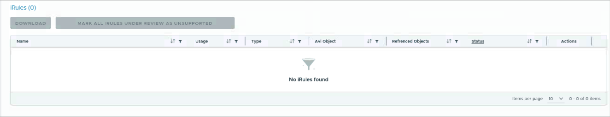
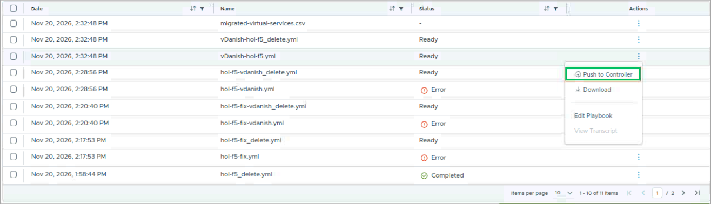
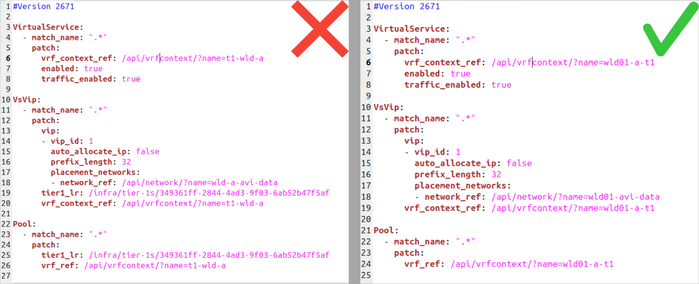
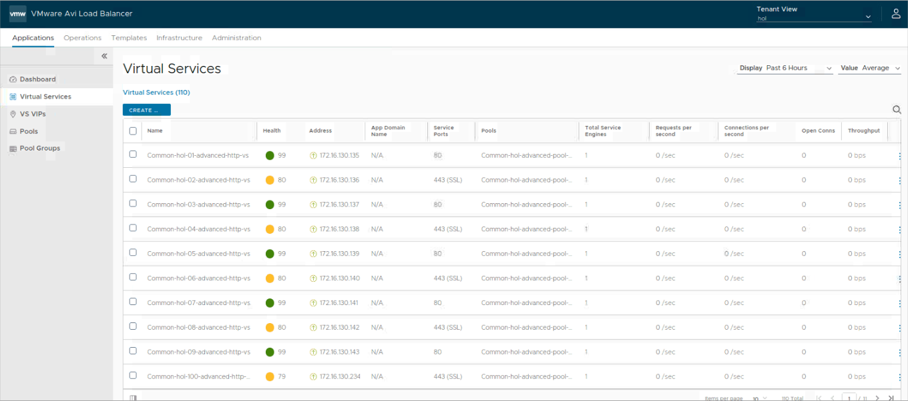

Two fixes from the lab Migrate to VMware Avi Load Balancer using the Avi Conversion Tool (HOL-2740-05-ANS-L), for the two places where the lab manual provided didn't work for me. Both are in the F5 migration in Module 1. The whole lab is in HOL LOG #16. Click any photo to enlarge it.
1. The controller version
The problem
The lab manual provided says to enter 31.1.1 as the version of the staging controller:

The wizard then fails at the last step, and no iRules come through:


The fix
The version has to match what the controller actually runs. You can see it on the controller under Administration:

Go back to Controller Information and enter 32.1.1:

Now the import goes through and the iRules show up:

2. The patch file
The problem
Before the playbook gets generated, the lab manual provided says to copy tier1_patch.yml from the f5_migration folder and paste it into Apply Patch. With that file as it is, the playbook ends in Error when you push it. It took me three tries:

The fix
The file uses a VRF (t1-wld-a) and a network (wld-a-avi-data) that this lab doesn't have. Change them to wld01-a-t1, the same VRF you pick in Map Destination, and wld01-avi-data, and take out the two tier1_lr lines:

The fixed patch, to paste into Apply Patch:
#Version 2671
VirtualService:
- match_name: ".*"
patch:
vrf_context_ref: /api/vrfcontext/?name=wld01-a-t1
enabled: true
traffic_enabled: true
VsVip:
- match_name: ".*"
patch:
vip:
- vip_id: 1
auto_allocate_ip: false
prefix_length: 32
placement_networks:
- network_ref: /api/network/?name=wld01-avi-data
vrf_context_ref: /api/vrfcontext/?name=wld01-a-t1
Pool:
- match_name: ".*"
patch:
vrf_ref: /api/vrfcontext/?name=wld01-a-t1Then generate the playbook and push it. All 110 virtual services from the F5 config show up in the hol tenant:
